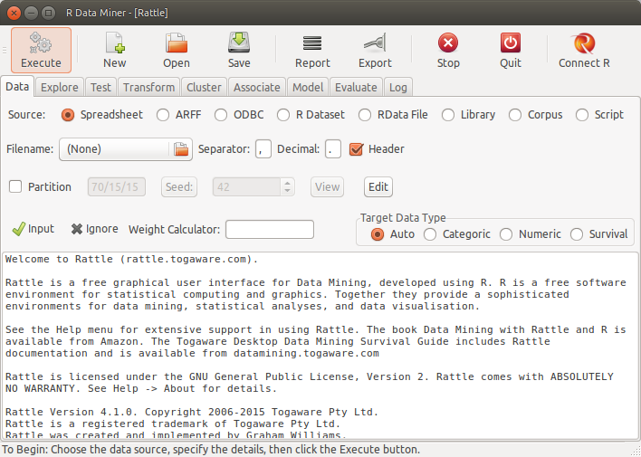
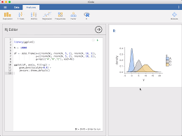

## listofpackages <- c("arules","arulesViz", "quarto", "ggplot2", "vioplot", "UsingR", "fpc", "reshape", "partykit", "C50", "utils", "rpart", "rpart.plot", "class", "klaR", "e1071", "popbio", "boot", "dplyr", "doParallel", "gbm", "themis", "pROC", "neuralnet", "igraph", "RMariaDB", "tidymodels", "ranger", "tm", "wordcloud", "xts", "lubridate", "forecast", "urca", "glmnet", "FSelectorRcpp", "pls", "emoa", "foreign" )
# newpackages <- listofpackages[!(listofpackages %in% installed.packages()[,"Package"])]
# if(length(newpackages)>0) install.packages(newpackages,dependencies = TRUE)
# # install from archive (RPG is no maintained anymore)
# if (!is.element("rgp", installed.packages()[,1]))
# { install.packages("https://cran.r-project.org/src/contrib/Archive/rgp/rgp_0.4-1.tar.gz",
# repos = NULL)
# }
## end of installing packages
# in Linux you may need to run several commands (in the terminal) and install additional libraries, e.g.
# sudo R CMD javareconf
# sudo apt-get install build-essential
# sudo apt-get install libxml2-dev
# sudo apt-get install libpq
# sudo apt-get install libpq-dev
# sudo apt-get install -y libmariadb-client-lgpl-dev
# sudo apt-get install texlive-xetex
# sudo apt-get install r-cran-rmysql1 Introduction to R
The goal of the first part of this book is to get you up to speed with the basics of R as quickly as possible.
1.1 Installation
Install the latest preview version for getting all features.
Follow the procedures according to your operating system.
- Linux: You need to have
blasandgfortraninstalled on your Linux, for installing thecoinpackage. - Rgraphviz requires Bioconductor:
BiocManager::install("Rgraphviz")(installBiocManagerfrom CRAN first if needed). - Run the following lines for installing all needed packages (this may take some time):
1.2 R and RStudio
R is a programming language for statistical computing and data analysis that supports a variety of programming styles. See R in Wikipedia
R has multiple online resources and books.
Getting help in R
R as a calculator. Console: It uses the command-line interface.
This document is an RMarkdown document. See bookdown.org
Examples:
loc <- c(120, 240, 310, 480, 560, 700) # Lines of code per module
defects <- c(0, 1, 1, 2, 3, 4) # Observed post-release defects
print(defects) # Print vector
mean(defects) # Average defects per module
var(defects) # Variability of defects
lm_1 <- lm(defects ~ loc) # Simple defect-risk trend model
print(lm_1)
summary(lm_1)
par(mfrow=c(2, 2)) # Request 2x2 plot layout
plot(lm_1) # Diagnostic plots for the fitted model
help(lm)
?lm
apropos("lm")
example(lm)R script. # A file with R commands
# commentssource("filewithcommands.R")sink("recordmycommands.lis")savehistory()From command line:
- Rscript
- Rscript file with
-e(e.g.Rscript -e 2+2)
- To exit R:
quit()
- Rscript
Variables. R is case sensitive
var1 <- c("Auth", "Billing", "Search")
vAr1 <- c("auth", "billing", "search")
var1
vAr1 Operators
- assign operator
<-
- sequence operator, for example:
mynums <- 0:20 - arithmetic operators: + - = / ^ %/% (integer division) %% (modulus operator)
- assign operator
The Workspace. Objects.
ls()objects()ls.str()lists and describes the objects
rm(x)delete a variable. E.g.,rm(totalCost)s.str()objects()str()The structure function provides information about the variable
RStudio, RCommander and RKWard are the well-known IDEs for R (more later).
Four # (‘####’) create an environment in RStudio. An environment binds a set of names to a set of values. You can think of an environment as a bag of names.
Working directories:
# set your working directory
# setwd("~/workingDir/")
getwd()
# record R commands:
# sink("recordmycommands.txt", append = TRUE)1.3 Basic Data Types
class( )logical:
TRUE,FALSEnumeric, integer:
is.numeric( )is.integer( )
character
Examples:
TRUE
class(TRUE)
FALSE
NA # missing
class(NA)
T
F
NaN
class(NaN)
# numeric data type
2
class(2)
2.5
2L # integer
class(2L)
is.numeric(2)
is.numeric(2L)
is.integer(2)
is.integer(2L)
is.numeric(NaN)data type coercion:
as.numeric( )as.character( )
as.integer( )
Examples:
truenum <- as.numeric(TRUE)
truenum
class(truenum)
falsenum <- as.numeric(FALSE)
falsenum
num2char <- as.character(55)
num2char
char2num <- as.numeric("55.3")
char2int <- as.integer("55.3")1.3.1 Missing values
NAstands for Not Available, which is not a number as well. It applies to missing values.NaNmeans ‘Not a Number’
Examples:
NA + 1
mean(c(5,NA,7))
mean(c(5,NA,7), na.rm=TRUE) # some functions allow to remove NAs1.4 Vectors
Examples:
phases <- c("reqs", "dev", "test1", "test2", "maint")
str(phases)
is.vector(phases)
thevalues <- c(15, 60, 30, 35, 22)
names(thevalues) <- phases
str(thevalues)
thevaluesA single value is a vector! Example:
aphase <- 44
is.vector(aphase)
length(aphase)
length(thevalues)1.4.1 Coercion for vectors
thevalues1 <- c(15, 60, "30", 35, 22)
class(thevalues1)
thevalues1
# <- is equivalent to assign ( )
assign("costs", c(50, 100, 30))1.4.2 Vector arithmetic
The operation is carried out in all the elements of the vector. For example:
assign("costs", c(50, 100, 30))
costs/3
costs - 5
costs <- costs - 5
incomes <- c(200, 800, 10)
earnings <- incomes - costs
sum(earnings)
# R recycles values in vectors!
vector1 <- c(1,2,3)
vector2 <- c(10,11,12,13,14,15,16)
vector1 + vector2Subsetting vectors
### Subsetting vectors []
phase1 <- phases[1]
phase1
phase3 <- phases[3]
phase3
thevalues[phase1]
thevalues["reqs"]
testphases <- phases[c(3,4)]
thevalues[testphases]
### Negative indexes
phases1 <- phases[-5]
phases
phases1
#phases2 <- phases[-testphases] ## error in argument
phases2 <- phases[-c(3,4)]
phases2
### subset using logical vector
phases3 <- phases[c(FALSE, TRUE, TRUE, FALSE)] #recicled first value
phases3
selectionv <- c(FALSE, TRUE, TRUE, FALSE)
phases3 <- phases[selectionv]
phases3
selectionvec2 <- c(TRUE, FALSE)
thevalues2 <- thevalues[selectionvec2]
thevalues2
### Generating regular sequences with `:` and `seq`
aseqofvalues <- 1:20
aseqofvalues2 <- seq(from=-3, to=3, by=0.5 )
aseqofvalues2
aseqofvalues3 <- seq(0, 100, by=10)
aseqofvalues4 <- aseqofvalues3[c(2, 4, 6, 8)]
aseqofvalues4
aseqofvalues4 <- aseqofvalues3[-c(2, 4, 6, 8)]
aseqofvalues4
aseqofvalues3[c(1,2)] <- c(666,888)
aseqofvalues3
### Logical values in vectors TRUE/FALSE
aseqofvalues3 > 50
aseqofvalues5 <- aseqofvalues3[aseqofvalues3 > 50]
aseqofvalues5
aseqofvalues6 <- aseqofvalues3[!(aseqofvalues3 > 50)]
aseqofvalues6
### Comparison functions
aseqofvalues7 <- aseqofvalues3[aseqofvalues3 == 50]
aseqofvalues7
aseqofvalues8 <- aseqofvalues3[aseqofvalues3 == 22]
aseqofvalues8
aseqofvalues9 <- aseqofvalues3[aseqofvalues3 != 50]
aseqofvalues9
logicalcond <- aseqofvalues3 >= 50
aseqofvalues10 <- aseqofvalues3[logicalcond]
aseqofvalues10
### Remove Missing Values (NAs)
aseqofvalues3[c(1,2)] <- c(NA,NA)
aseqofvalues3
aseqofvalues3 <- aseqofvalues3[!is.na(aseqofvalues3)]
aseqofvalues31.5 Arrays and Matrices
Matrices are actually long vectors.
mymat <- matrix(1:12, nrow =2)
mymat
mymat <- matrix(1:12, ncol =3)
mymat
mymat <- matrix(1:12, nrow=2, byrow = TRUE)
mymat
mymat <- matrix(1:12, nrow=3, ncol=4)
mymat
mymat <- matrix(1:12, nrow=3, ncol=4, byrow=TRUE)
mymat
### recycling
mymat <- matrix(1:5, nrow=3, ncol=4, byrow=TRUE)
mymat
### rbind cbind
cbind(1:3, 1:3)
rbind(1:3, 1:3)
mymat <- matrix(1)
mymat <- matrix(1:8, nrow=2, ncol=4, byrow=TRUE)
mymat
rbind(mymat, 9:12)
mymat <- cbind(mymat, c(5,9))
mymat
mymat <- matrix(1:8, byrow = TRUE, nrow=2)
mymat
rownames(mymat) <- c("row1", "row2")
mymat
colnames(mymat) <- c("col1", "col2", "col3", "col4")
mymat
mymat2 <- matrix(1:12, byrow=TRUE, nrow=3, dimnames=list(c("row1", "row2", "row3"),
c("col1", "col2", "col3", "col4")))
mymat2
### Coercion in Arrays
matnum <- matrix(1:8, ncol = 2)
matnum
matchar <- matrix(LETTERS[1:6], nrow = 4, ncol = 3)
matchar
matchars <- cbind(matnum, matchar)
matchars
### Subsetting
mymat3 <- matrix(sample(-8:15, 12), nrow=3) #sample 12 numbers between -8 and 15
mymat3
mymat3[2,3]
mymat3[1,4]
mymat3[3,]
mymat3[,4]
mymat3[5] # counts elements by column
mymat3[9]
## Subsetting multiple elements
mymat3[2, c(1,3)]
mymat3[c(2,3), c(1,3,4)]
rownames(mymat3) <- c("r1", "r2", "r3")
colnames(mymat3) <- c("c1", "c2", "c3", "c4")
mymat3["r2", c("c1", "c3")]
### Subset by logical vector
mymat3[c(FALSE, TRUE, FALSE),
c(TRUE, FALSE, TRUE, FALSE)]
mymat3[c(FALSE, TRUE, TRUE),
c(TRUE, FALSE, TRUE, TRUE)]
### matrix arithmetic
row1 <- c(220, 137)
row2 <- c(345, 987)
row3 <- c(111, 777)
mymat4 <- rbind(row1, row2, row3)
rownames(mymat4) <- c("row_1", "row_2", "row_3")
colnames(mymat4) <- c("col_1", "col_2")
mymat4
mymat4/10
mymat4 -100
mymat5 <- rbind(c(50,50), c(10,10), c(100,100))
mymat5
mymat4 - mymat5
mymat4 * (mymat5/100)
### index matrices
m1 <- array(1:20, dim=c(4,5))
m1
index <- array(c(1:3, 3:1), dim=c(3,2))
index
#use the "index matrix" as the index for the other matrix
m1[index] <-0
m11.6 Factors
- Factors are variables in R which take on a limited number of different values; such variables are often referred to as ‘categorical variables’ and ‘enumerated type’.
- Factors in R are stored as a vector of integer values with a corresponding set of character values to use when the factor is displayed.
- The function
factoris used to encode a vector as a factor
personnel <- c("Analyst1", "ManagerL2", "Analyst1", "Analyst2",
"Boss", "ManagerL1", "ManagerL2", "Programmer1",
"Programmer2", "Programmer3", "Designer1","Designer2",
"OtherStaff") # staff in a company
personnel_factors <- factor(personnel)
personnel_factors #sorted alphabetically
str(personnel_factors)
personnel2 <- factor(personnel,
levels = c("Boss", "ManagerL1", "ManagerL2",
"Analyst1", "Analyst2", "Designer1",
"Designer2", "Programmer1", "Programmer2",
"Programmer3", "OtherStaff"))
#do not duplicate the same factors
personnel2
str(personnel2)
# a factor's levels will always be character values.
levels(personnel2) <- c("B", "M1", "M2", "A1", "A2",
"D1", "D2", "P1", "P2", "P3", "OS")
personnel2
personnel3 <- factor(personnel,
levels = c("Boss", "ManagerL1", "ManagerL2",
"Analyst1", "Analyst2", "Designer1",
"Designer2", "Programmer1", "Programmer2",
"Programmer3", "OtherStaff"),
c("B", "M1", "M2", "A1", "A2", "D1", "D2",
"P1", "P2", "P3", "OS"))
personnel3
### Nominal versus ordinal, ordered factors
personnel3[1] < personnel3[2] # error, factors not ordered
tshirts <- c("M", "L", "S", "S", "L", "M", "L", "M")
tshirt_factor <- factor(tshirts, ordered = TRUE,
levels = c("S", "M", "L"))
tshirt_factor
tshirt_factor[1] < tshirt_factor[2]1.7 Lists
Lists are the R objects which contain elements of different types: numbers, strings, vectors and other lists. A list can also contain a matrix or a function as one of their elements. A list is created using list() function.
Operators for subsetting lists include: - ‘[’ returns a list - ‘[[’ returns the list element - ‘$’ returns the content of that element in the list
c("R good times", 190, 5)
song <- list("R good times", 190, 5)
is.list(song)
str(song)
names(song) <- c("title", "duration", "track")
song
song$title
song2 <- list(title="Good Friends",
duration = 125,
track = 2,
rank = 6)
song3 <- list(title="Many Friends",
duration = 125,
track= 2,
rank = 1,
similar2 = song2)
song[1]
song$title
str(song[1])
song[[1]]
str(song[[1]])
song2[3]
song3[5] # a list
str(song3[5])
song3[[5]]
song3$similar2
song[c(1,3)]
str(song[c(1,3)])
result <- song[c(1,3)]
result[1]
result[[1]]
str(result)
result$title
result$track
# access with [[ to content
song3[[5]][[1]]
song3$similar2[[1]]
# Subsets
### subset by names
song[c("title", "track")]
song3["similar2"]
resultsimilar <- song3["similar2"]
str(resultsimilar)
resultsimilar1 <-song3[["similar2"]]
str(resultsimilar1)
resultsimilar1$title
# subset by logicals
song[c(TRUE, FALSE, TRUE, FALSE)]
result3 <- song[c(TRUE, FALSE, TRUE, FALSE)] # is a list of two elements
# extending the list
shared <- c("Hillary", "Mari", "Mikel", "Patty")
song3$shared <- shared
str(song3)
cities <- list("Bilbao", "New York", "Tartu")
song3[["cities"]] <- cities
str(song3)1.8 Data frames
A data frame is the data structure most often used for data analyses. A data frame is a list of equal-length vectors. Each element of the list can be thought of as a column and the length of each element of the list is the number of rows. As a result, data frames can store different classes of objects in each column (i.e. numeric, character, factor).
The tidyverse package provides a version of the data frame called tibble
thenames <- c("Ane", "Mike", "Laura", "Viktoria", "Martin")
ages <- c(44, 20, 33, 15, 65)
employee <- c(FALSE, FALSE, TRUE, TRUE, FALSE)
mydataframe <- data.frame(thenames, ages, employee)
mydataframe
names(mydataframe) <- c("FirstName", "Age", "Employee")
str(mydataframe)
#strings are not factors!
mydataframe <- data.frame(thenames, ages, employee,
stringsAsFactors=FALSE)
names(mydataframe) <- c("FirstName", "Age", "Employee")
str(mydataframe)
# subset data frame
mydataframe[4,2]
mydataframe[4, "Age"]
mydataframe[, "FirstName"]
mydataframe[c(2,5), c("Age", "Employee")]
matfromframe <- as.matrix(mydataframe[c(2,5), c("Age", "Employee")])
str(matfromframe)
mydataframe[3]
# convert to vector
mydf0 <- mydataframe[3] #data.frame
str(mydf0)
myvec <- mydataframe[[3]] #vector
str(myvec)
mydf0asvec <- as.vector(mydataframe[3]) # but it doesn't work . Use [[]]
str(mydf0asvec)
mydf0asvec <- as.vector(mydataframe[[3]])
str(mydf0asvec)
# add column
height <- c(166, 165, 158, 176, 199)
weight <- c(66, 77, 99, 88, 109)
mydataframe$height <- height
mydataframe[["weight"]] <- weight
mydataframe
# add a column
birthplace <- c("Tallinn", "London", "Donostia", "Paris", "New York")
mydataframe <- cbind(mydataframe, birthplace)
mydataframe
# add a row
anton <- data.frame(FirstName = "Anton", Age = 77, Employee=TRUE, height= 170, weight = 65, birthplace ="Amsterdam", stringsAsFactors=FALSE)
mydataframe <- rbind (mydataframe, anton)
mydataframe
# sorting
mydataframeSorted <- mydataframe[order(mydataframe$Age, decreasing = TRUE), ] #all columns
mydataframeSorted
mydataframeSorted2 <- mydataframe[order(mydataframe$Age, decreasing = TRUE), c(1,2,6) ]
mydataframeSorted21.9 R Functional Functions
R is a functional language and there are some special functions provided: apply(), lapply(), sapply(), tapply(), mapply(), vapply()
One of its main strengths lies in the use of the functions apply() (and all its variations) on lists, matrices, data frames or other data structures. The tidyverse package provides the purrr package for functional programming. The topic of functional programming lies beyond the purpose of this introduction.
Most of the commands that we use in our scripts are functions applied to data.
1.10 Environments
An environment is a place where R stores variables that is where R binds a set of names to a set of object values. An environment is something like a bag or a list of names. Every name in an environment is unique.
The top level environment R_GlobalEnv is created when we start up R and is the global environment. Every environment has parent environment. When we define a function, a new environment is created.
1.10.1 Global variables, local variables and programming scope
Global variables are those variables which exists throughout the execution of a program. Local variables are those variables which exist only within a certain part of a program like a function. The super-assignment operator, <<-, is used to make assignments to global variables or to make assignments in the parent environment.
# variables and functions in the current environment
ls()
# to get the current environment
environment()
# the base environment is the environment of the base package
baseenv()
# list of environments
search()
# functions and environments
# in this example we do not return any value
myfunction <- function() {
myvar_a<- 50
myfunctioninside <- function() {
myvar_a <- 100
# myvar_a <<- 100
print(myvar_a)
}
myfunctioninside()
print(myvar_a)
# myvar_a <<- 100
}
myvar_a <- 10
myfunction()
print(myvar_a)
# create environment
my_env <- new.env()
my_env
ls(my_env)
character(0)
assign("myvar_a", 700, envir=my_env)
my_env$mytext = " a text"
ls(my_env)
myvar_a
my_env$myvar_a
parent.env(my_env)
get('myvar_a', envir=my_env)1.11 Reading Data
R is capable of reading most formats including CSV, MS Excel formats (xlsx, etc.) as well as other statistical packages (e.g. SAS, SPSS, etc.) and data mining tools such as ARFF (Weka’s format).
R also provides has two native data formats, Rdata and Rds. These formats are used when leaving or starting an R session so that R objects can be stored or retrieved to continue in the same state). While Rdata is used to save multiple R objects, Rds is used to save a single R object.
load("data.rdata") # It is needed to be in the same directory (setwd())To read CSV (Comma Separated Values) files in R
# Import the data and look at the first six rows
f <- read.csv("data.csv")
head(f)To read ARFF files, we can use the foreign library.
library(foreign)
isbsg <- read.arff("datasets/effortEstimation/isbsg10teaser.arff")
mydataISBSG <- isbsg[, c("FS", "N_effort")]
str(mydataISBSG)1.12 Plots
There are several graphic packages that are recommended, in particular ggplot. However, there is some basic support in the R base for graphics. The following Figure @ref(fig:plotExample) shows a simple plot.
plot(mydataISBSG$FS, mydataISBSG$N_effort)1.13 Control flow in R
R provides most common control flow structures found in most languages
if
x <- 6
if (x >= 5) {
"x is greater than or equals 5"
} else {
"x is smaller than 5"
}ifelse
kc1 <- read.csv("datasets/defectPred/unified/Unified-file.csv", stringsAsFactors = FALSE)
kc1 <- kc1[, c("McCC", "CLOC", "PDA", "PUA", "LLOC", "LOC", "bug")]
kc1$Defective <- ifelse(kc1$bug > 0, "Y", "N")
kc1$bug <- NULL
kc1$Defective <- ifelse(kc1$Defective == "Y", 1, 0)
head(kc1, 1)for loops
for(x in 1:5){
print(x)
}1.14 Built-in Datasets
R comes with some built-in datasets ready to use Description of datasets http://www.sthda.com/english/wiki/r-built-in-data-sets
data() #list of datasets already availableThen, to load a dataset is as follows.
# load the mtcars Motor Trend Car Road Tests
data("mtcars")And another example.
# Monthly Airline Passenger Numbers 1949-1960
# Time series object ts() convert a vector to a time series
data("AirPassengers")
str(AirPassengers)
plot(AirPassengers)1.15 Other tools with R
1.15.1 Rattle
There is graphical interface, Rattle, that allow us to perform some data mining tasks with R (Williams 2011).

1.15.2 Jamovi
GUI for statistical analysis in R. It allow us to export the actual R code. Its Website is: https://www.jamovi.org/

1.15.3 JASP
There is another GUI for statistics, JASP, but it is not so easy at the moment to export the R code. https://jasp-stats.org/